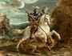

< < < Back
Why Theology Is A Man’s Discipline – Return Of Kings
When ROK announced they were looking for a “Masculine Theologian,” I was urged by a few good men to put in for the job. Some men may have come across my past articles or comments under the handle CuiPertinebit; I now take the name of Aurelius Moner, a moniker closely related to the name of my monastic vows (for St. Aurelius Augustinus of Hippo, and Bd. Dalmatius Moner of the Dominican Order).
As I contemplated the possibility of contributing more regularly, I asked myself what a “Masculine Theologian” might be. What is “Masculine Theology?”
Not a Niche or Designer Spirituality
Well, decidedly, I don’t want to approach this as a “special interest” theology, for, in my mind, this is an inherently unmanly approach. I am a Catholic, and I often come across Catholic blogs or organizations that try to aim a message at men, turning manly ideas and sentiments into gimmicks. I’ve seen sites speak of a “New Emangelization.” I’ve seen sites that try to jazz the fellas up by fixating on a “warrior” spirituality—Catholic Knights! Soldiers of the Lord Unite!—but, in practice, all they accomplish is a white-washing of the Faith, reducing or re-formatting every element of Christian piety to an affected and superficial affinity with martial themes—a caricature both of the Faith and of manhood.
In fairness to them, they are simply overcompensating for the pervasive feminization of Christianity, from which many Christian men seem unable to disentangle themselves. “We may be mumbling our rosaries in front of this sappy picture of Dreamboat Jesus, but as long as our rosaries are made of military-grade parachord and we call ourselves Catholic Knights, and we sometimes have a dudes-only BBQ party, we will be on the way to rediscovering the macho piety of our forebears.”
Absit (colloquially: “Hell, no”), as St. Paul so often said. Men are the naturally more noble sex; long experience, and the historical record, has taught me that men aspire after noble ideals far more easily than women. The instinct for integrity, for pursuit of the ideal, for disciplining one’s self to stay the course, for actually loving others and being caught up in their well-being, rather than referring everything to the emotional feelings we get from connections with other people, is a masculine instinct; and there is no ideal, no course requiring such discipline and integrity, no love that will require such fidelity, such self-forgetfulness (even self-mortification), as the soul’s ascent to God.
Therefore, theology and philosophy have always been masculine disciplines, drawing on the nobility of the male spirit. I hope simply to continue in the best traditions of these disciplines, trusting them to be masculine enough as they are.
The Patriarchy Oppressing Women from Celestial Thrones of Glory
I won’t turn masculinity into a gimmick or commodity, therefore; but certainly if theology and philosophy are masculine pursuits, they must comprise a treasury of masculine wisdom. In an age such as ours, where the tradition of masculinity has not been passed down very well (along with many others), a recovery of so rigorously masculine a tradition as the (authentic, Western) religious tradition will naturally benefit men.
The West Always Described Spiritual And Moral Struggle As A Manly Activity
Indeed, just by way of brief demonstration, the Western Tradition has spoken of the spiritual and moral struggle precisely in terms that denote manliness. Manliness and moral virtue are the same thing. Virtue is from Latin virtus, having the same root as vir, meaning “man.” The Greek ἀρετή (aretē), “virtue or manly excellence,” is related to other words with “ar” in the root, like ἀρρενικός (arrenikos, manly).
The virtue of the “incensive” aspect of the soul – the aspect that “drives” our action – is called in Greek ἀνδρεία (andreia, manliness), and in Latin fortitudo (fortitude, more than just bravery, means “manly firmness of will,” the resolve and courage to keep fighting despite fear, exhaustion, etc.). The chief vice opposed to this, is called in Latin mollities, meaning “softness,” equivalent to the Greek μαλακίας (malakias).
In both Latin and Greek, the term denotes “effeminacy,” if we are speaking politely; if we are speaking bluntly, they are used as epithets to mean “faggot” or “wanker.” This is the sense the word still has in Modern Greek, where μαλακός (malakos, “masturbator”) is a common insult against useless or weak men.

If only St. George had read the works of Elizabeth Gilbert!
Now, I don’t doubt that most men would balk at the suggestion that they struggle with effeminacy, or need to fight it! Yet, this is how the spiritual life has always been described by Pagan and by Christian authors; it may help, however, to know exactly what we mean by effeminacy. The Angelic Doctor, St. Thomas Aquinas, gives us a good definition from the perspective of both Classical Paganism and the Church:
…this pertains to the reckoning of effeminacy [mollities], for a thing is said to be “soft” [mollis] if it readily yields to the touch. Now a thing is not declared to be soft through yielding to a heavy blow; even walls yield to the battering-ram, and so a man is not said to be effeminate if he yields to heavy blows. Hence the Philosopher [i.e., Aristotle] says (Ethic. vii, 7) that “it is no wonder, if a man be overcome by strong and overwhelming pleasures or sorrows; but he is to be pardoned if he struggles against them.”
Now it is evident that fear of danger is more impelling than the desire of pleasure: for which reason Tully says (De Offic. i) that “it is inconsistent for one who is not confounded by fear to be defeated by lust, or for one who has proved himself unconquered by toil, to yield to pleasure.” Moreover, pleasure itself is a stronger impulse than is unhappiness, for the lack of pleasure is a mere privation. Wherefore, according to the Philospher (Ethic. vii, 7), he is rightly called an effeminate man, who withdraws himself from the Good because a lack of pleasure disappoints him, yielding as it were to a weak movement.
Men Must Master Themselves
So, effeminacy is that inertia, that mediocrity, which shrinks from the Good because it fears to be deprived of pleasures and comforts. This is, generally, the default state of women: to be good domestic consumers, concerned primarily with satisfying desires and being comfortable or pampered; but men have always regarded this with instinctive horror.
It erodes the qualities necessary to perceive, establish and defend the good. Now, let us also face the facts: in the past century, manly excellence has completely retreated before this encroaching darkness of mediocrity. Manly excellence has fled the field and abandoned it to an army of women and degenerates. We have submitted ourselves to castration through money, self-referential sex, porn, gluttony, abundance, sloth and entertainments. We doffed our armor and let a gaggle of Pyjama Boys pillage the culture. “That which yields easily to a light blow,” is effeminate.
I hate to say it, men, but this aptly describes late, Western man. We have been seized by a great effeminacy. We only incur blame if we remain under its sway, so let us overcome this weakness in all haste.
I hope I can help to illumine the spiritual struggle for men of ROK, both in the interior and social spheres. But the truths of this struggle can sometimes be a bitter pill to swallow. Still, on a forum for masculine self-improvement, the concept of swallowing a necessary but bitter pill should not be new. We have a difficult task ahead, if we are to set ourselves and our society straight; I have some very pointed ideas about that. I hope the men of ROK may find my contributions in this regard to be worthwhile.
Ad Astra!

St. Lawrence of Brindisi leading the Holy Roman Empire’s soldiers against the Turkish invaders at Albe-Royal (Stulweissenberg)
Read More: 3 Ways To Cultivate The Discipline Of A Neomasculine Lifestyle